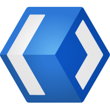
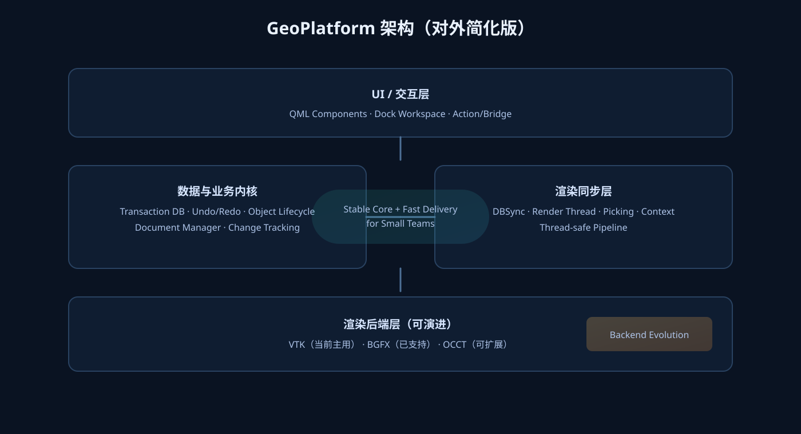

前端迭代快
QML 组件化界面，支持复杂交互、Dock 布局和工作区切换，界面变化可快速验证。

GeoPlatformFor Small Teams
用 QML + 多线程渲染 + 事务型 DB 构建 3D 产品。 当前已在 3D 打印 / CAD 场景落地，渲染后端已支持 VTK / BGFX，并可按项目扩展 OCCT。
QML 组件化界面，支持复杂交互、Dock 布局和工作区切换，界面变化可快速验证。
数据层、交互层、渲染层分离。先跑通业务，再逐步升级能力，不被一次性大重构绑架。
事务机制支撑撤销/重做，配合动作系统与回放验证，降低复杂功能回归风险。
只展示层次关系，不暴露实现细节。

面向产品需求快速定义 UI 与交互流程，减少“每次新需求都重写界面”的成本。
渲染任务与主交互分离，适合复杂场景和高频操作。
属性级变更追踪、撤销/重做、对象生命周期可控，便于构建专业 3D 编辑能力。
当前已支持 VTK / BGFX，并在架构上预留 OCCT 等后端扩展路径。
案例已独立成单页，集中展示 3D 打印与 CAD 的完整演示视频。
通过事务型 DB + Undo/Redo，在模型编辑、参数调整、批量操作中保持状态一致与可回退。
数据层与渲染层解耦，便于并行开发与职责分工，同时保持整体架构高效、稳定、可维护。
录制/回放测试流程用于回归验证与演示复现，降低复杂交互系统上线风险。
验证核心业务链路与性能边界。
交付可运行版本，支撑内部试点或客户演示。
按模块迭代，持续扩展场景能力。
wechat: xiaojunyi8890
欢迎带业务场景沟通，我们先做一版可运行原型。